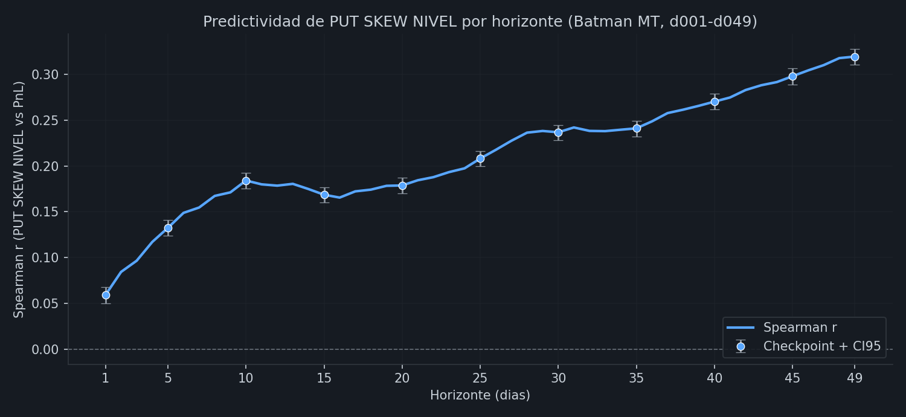
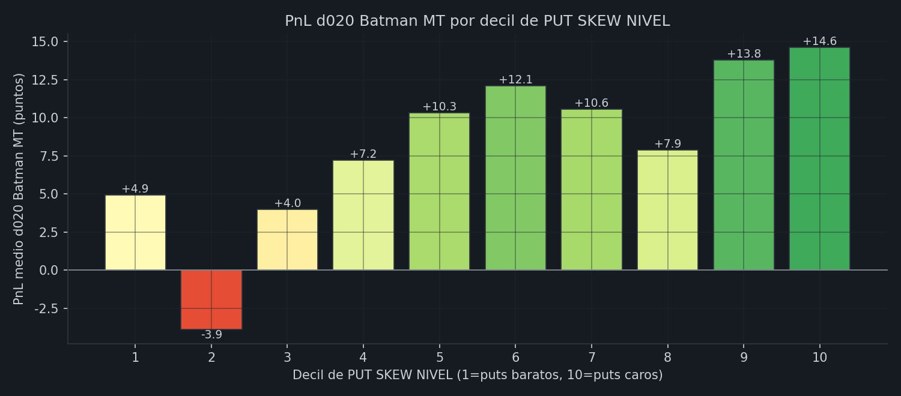
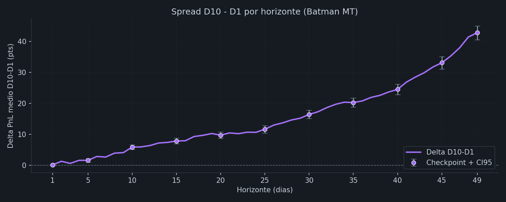
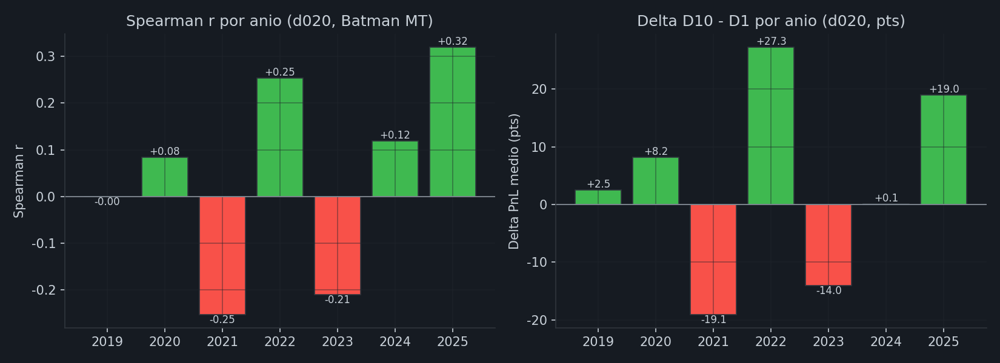
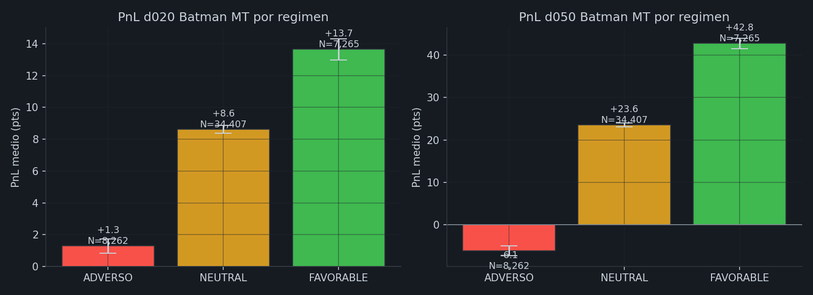
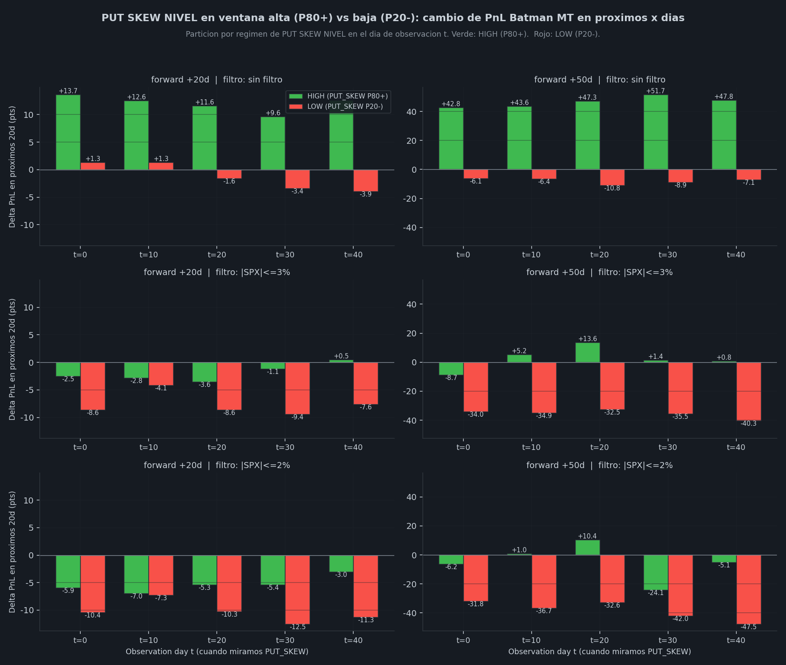
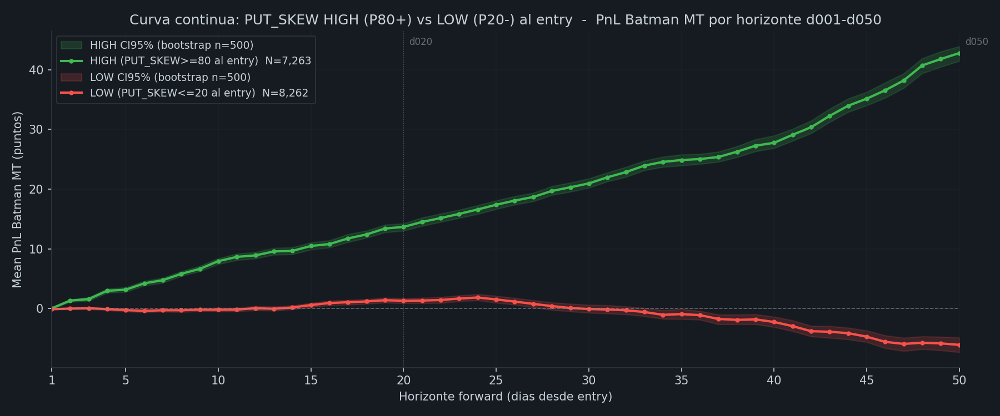

8 dias FAV en cluster del 3-13 marzo. 82 de 85 trades FAV ganaron (96.5%). El universo perdio en media; el cohort FAV entrego +37 pts mean PnL — un swing de +43 puntos sobre el universo. La regla operativa funciono live: entrar cuando PUT_SKEW ≥80, evitar el resto. Metrica: PnL_fwd_pts_25_mediana (25% del DTE forward, ultimo disponible — los trades de marzo 2026 aun no maduraron).
skew_25d_vs50_pct_expanding: percentil historico expanding
(sin lookahead) del spread de IV entre puts OTM 25-delta y puts ATM 50-delta a DTE 60. Mide cuan "caro"
esta el seguro de cola en puts respecto a su propia historia. FAVORABLE >= 80
(puts OTM caros, alta demanda de proteccion / volatilidad), ADVERSO ≤ 20 (puts
baratos, complacencia), NEUTRAL 20-80.
| Banda | WR vs univ | mean vs univ | PF vs univ | % univ |
|---|---|---|---|---|
| FAV (≥80) | +8pp / +18pp | 1.7x / 2.1x | 1.8x / 4.1x | 15% |
| NEU (20-80) | +1pp / +4pp | 1.1x / 1.1x | 1.1x / 1.3x | 69% |
| ADV (≤20) | -13pp / -27pp | 0.2x / -0.3x | 0.5x / 0.2x PERDIDA d050 | 17% |
NOTA Batman MT: ADV en MT a d020 es marginalmente positivo (+1.3 pts) pero a d050 pierde -6.1 pts. La regla operativa de NO ABRIR sigue siendo solida pero la senal a corto plazo es mas debil que en LT (donde ADV es negativo desde d020). Comparado con LT, MT discrimina mejor en horizonte largo (d050) que en corto (d020).
NO reaccionar a oscilaciones intradia. r(cambio_diario, PnL) = -0.02 (cero).
Solo importa la BANDA actual, no la trayectoria.
Year stability MT: Spearman positivo en 4 de 7 anios. Fallos: 2019 (~0), 2021 (-0.25), 2023 (-0.21). Mas debil que en LT (6/7). El edge MT vive sobre todo en horizontes largos (d050+). Delta D10-D1 positivo en 5/7 anios (mismo nivel que LT).
PUT SKEW NIVEL es el percentil expanding del spread de implied volatility entre el put OTM 25-delta y el put ATM 50-delta, medido a DTE 60 con snapshot 10:30 ET. "Expanding" significa que cada dia el percentil se calcula contra TODO el historial previo (sin lookahead) — empieza poco discriminante en 2019 y converge a una distribucion estable hacia 2021+.
iv_put_25d - iv_put_50d (spread crudo, ~0.01-0.05 en escala IV).Estrategia de validacion: Batman MT (49,934 trades 2019-2025, sin filtro SPX). Es la misma estrategia y el mismo dataset que valida la pagina hermana de TENSION (LIBERATION_SCORE_BATMAN_LT). Mantener un solo universo de validacion para ambas paginas simplifica la comparacion entre scores.
Para cada horizonte d001 a d049 calculamos:
PnL_d{X}_mediana.Sin filtro SPX aplicado: las metricas son sobre el universo Batman MT entero para mantener consistencia con el bloque de reglas operativas del top de la pagina y con el dashboard de TENSION.
Curva de correlacion de rangos entre el PUT SKEW NIVEL al dia de entrada del trade y el
PnL_d{X}_mediana a cada horizonte. Marcadores con barra: 11 checkpoints con
bootstrap CI95% (n_boot=2000).

Lectura: si la curva esta consistentemente por encima de cero y el CI95% del checkpoint inferior tampoco cruza cero, hay evidencia de que el score es predictor estadisticamente significativo del PnL Batman MT en ese horizonte.
Particionamos el universo Batman MT en 10 grupos iguales (deciles) ordenados por PUT SKEW NIVEL al dia de entrada. D1 = puts mas baratos (SKEW bajo), D10 = puts mas caros (SKEW alto). Si la senal es predictiva, deberia existir progresion creciente D1 < D2 < ... < D10 en PnL medio.

Diferencia de PnL medio entre top decil (D10) y bottom decil (D1) a cada horizonte. Si el spread es positivo y crece con el horizonte, el efecto del skew tiene persistencia en el PnL.

Recalculamos Spearman r y delta D10-D1 anio a anio. Verde = positivo, rojo = negativo. Una senal robusta debe mantener signo positivo en la mayoria de anios. Esta tabla muestra ahora la senal sobre Batman MT directamente, sin filtro SPX.

Misma logica que las bandas de la grafica del header. Aqui medimos el PnL medio (con CI95 bootstrap) de los trades historicos cuando el score estaba en cada zona, en dos horizontes: d020 (canonico Batman MT, matches LIBERATION dashboard) y d050 (mid-life del trade).

Pregunta operativa: "tengo un trade YA ABIERTO; si entra una ventana donde PUT SKEW NIVEL sube a P80+ o baja a P20- en t = 0/10/20/30/40 dias despues de la entrada, como cambia mi PnL Batman MT los proximos 20-50 dias respecto a HOY?"
Computado desde cero sobre Batman MT (no es la version cross-strategy del
original): para cada trade Batman MT abierto, miramos el PUT SKEW al dia t de vida
del trade y comparamos delta_PnL entre t y t+x. Verde = HIGH
(P80+ en t), rojo = LOW (P20- en t). Las tres filas anaden filtros opcionales sobre
|SPX_chg en ventana| (sin filtro como caso principal, ≤3% y ≤2% como controles).

Mismo concepto que la grafica de arriba pero continuo en el horizonte forward: en vez de mostrar solo +20d y +50d como puntos discretos, traza el PnL medio Batman MT cada dia desde d001 hasta d050 para los trades abiertos con PUT_SKEW ≥ 80 al entry vs los abiertos con PUT_SKEW ≤ 20 al entry. Bandas sombreadas = CI95% bootstrap (n=500). Lineas verticales punteadas = los 2 horizontes discretos del grafico de arriba (d020, d050).
